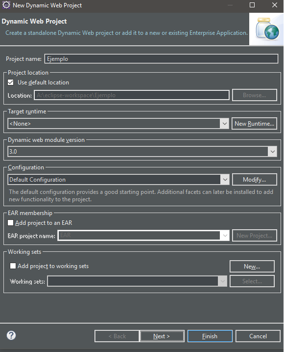
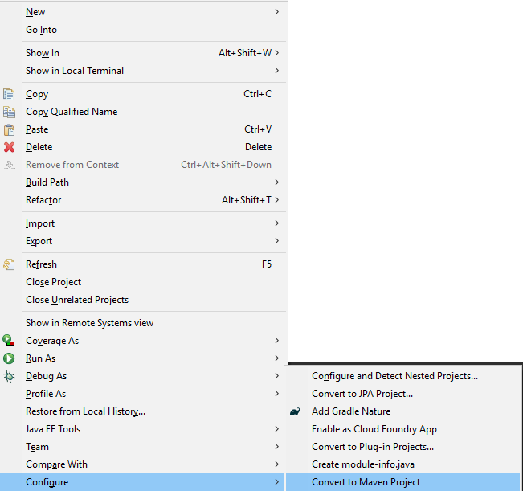
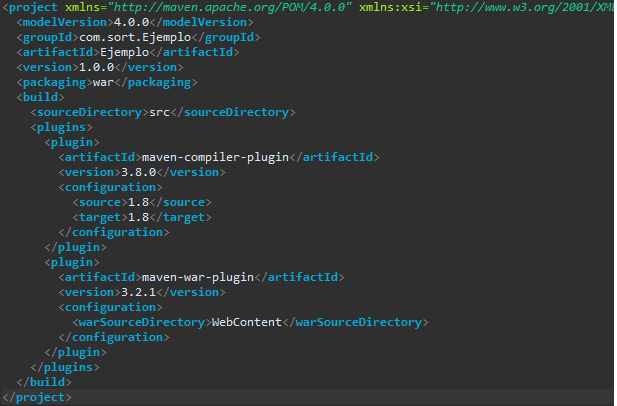
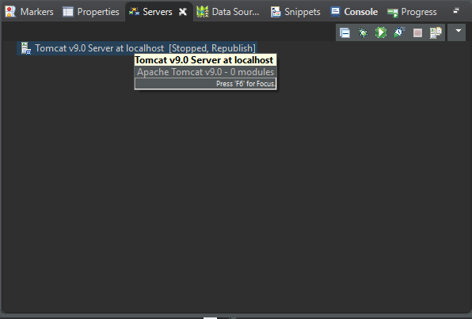
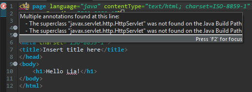
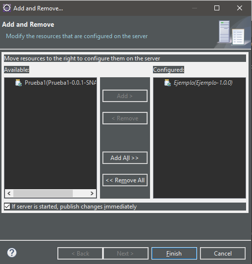
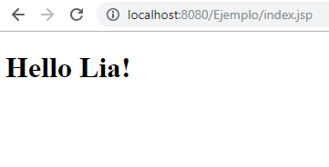

Abrimos el IDE Eclipse y creamos un nuevo proyecto Web dinámico.
Agregamos un nombre a nuestro proyecto.
Damos click derecho a nuestro proyecto y lo configuramos como un proyecto Maven.
Nos aseguramos que el packaging sea de tipo war.
Esto nos generara un archivo pom.xml.
Navegamos hasta la pestaña de Servidores y damos click al enlace que aparece.
Nos pedira seleccionar el tipo de servidor, en nuestro caso usaremos Tomcat 9.x
Nota: Puede que no nos aparezca esta versión, por lo que necesitamos añadirla.
Configuramos una variable de entorno Tomcat.
Podremos notar que nuestro servidor ha sido agregado!
En nuestra carpeta WebContent, creamos un nuevo archivo index.jsp
Puede que nos aparezca el siguiente error
Para corregirlo, navegamos a las propiedades del proyecto y marcamos nuestro servidor
En la pestaña de Servidores, le damos click derecho a nuestro servidor y navegamos a Add and Remove
Levantamos nuestro servidor
Y vemos nuestra página en el puerto 8080!
